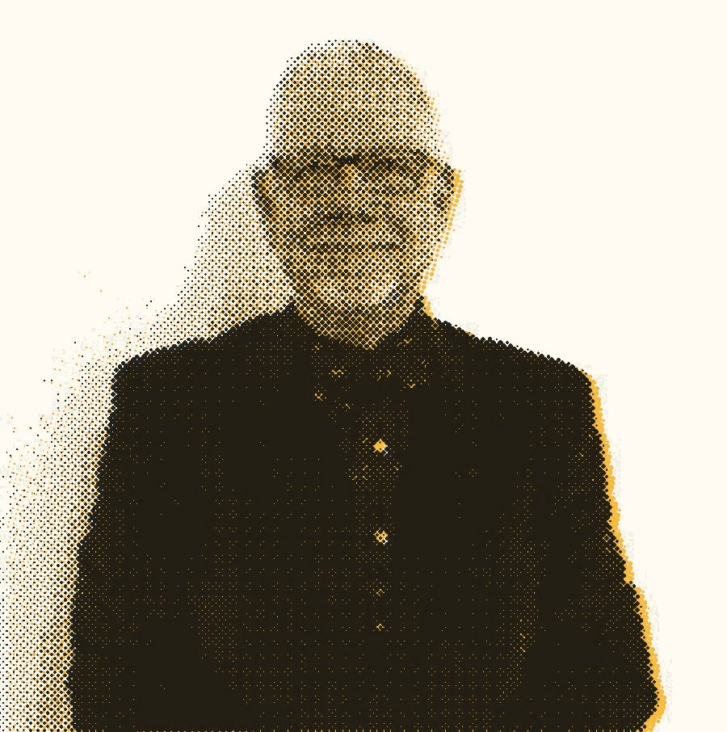
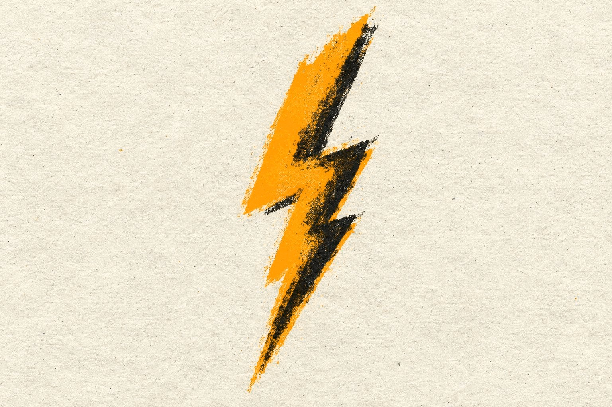
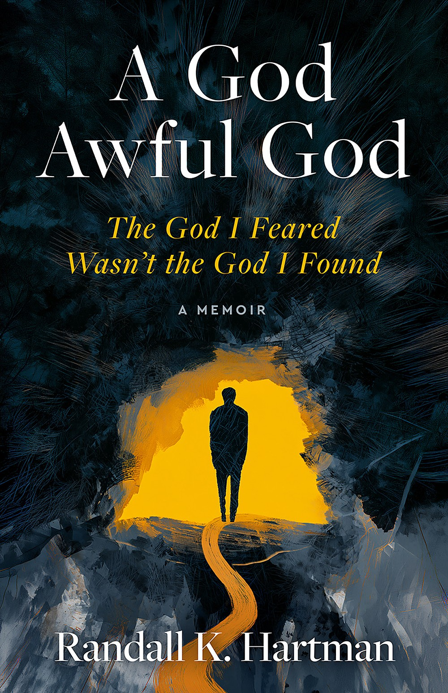
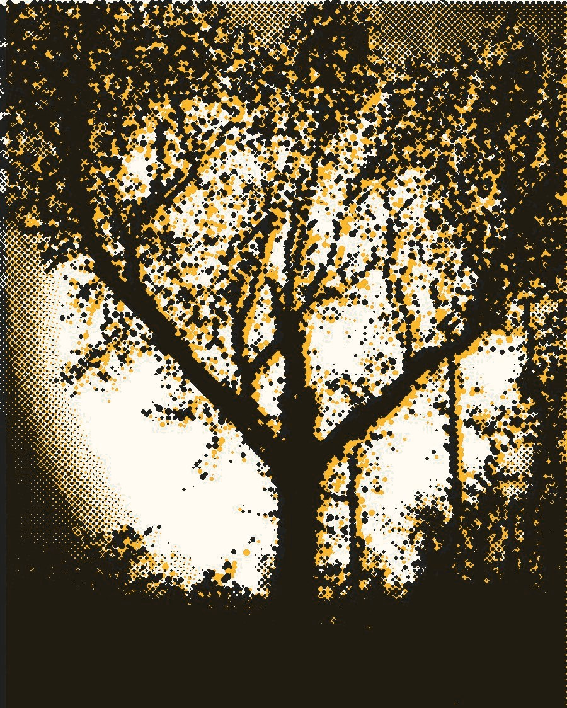

“God couldbe a God-awful God.”
The God I feared wasn’t the God I found. Forty years in the pulpit, and now the honest version.
Randall Hartman · A God Awful God · Dec 8, 2026



Fig. 02 · The memoir
A God Awful God
The God I Feared Wasn’t the God I Found
A seven-year-old opens the family Bible and finds God glaring from the clouds, lightning in His eyes. Six decades, a pulpit, and a church trial later, Randall tells how that picture finally broke, and who it had been aimed at all along.
- Publisher
- Seven Lanterns
- Release
- 12.08.26
- Format
- [TBD]
Fig. 03 · What I was taught
- God is angry.
- God is watching.
- God is keeping score.
- God is love.
I spent forty years explaining God from behind a pulpit. For most of them I was afraid of Him. This is where I write about what changed, and about the people my church taught me to fear.
— R.H.
Fig. 04 · New here?
Pick your question.
Index
Latest 6 of ~270 essays · weeklyFig. 05 · About
The pastor who kept asking.
Randall Hartman. Writer, photographer, husband of 51 years, grandfather of seven. Still an ordained elder in the Church of the Nazarene.

↑ One of his photographs
Lead pastor in Indiana, Ohio, and Michigan.
Interim pastor from Oregon to Alaska, helping churches in between.
Charged for writing that LGBTQ+ people belong. No guilty verdict.
Tom’s List (2016) and A God Awful God (2026). Also HuffPost, The Good Men Project, Sixty and Me.
Fig. 06 · The letter
Get the first scene free.
New essays, notes from the book, and excerpts nobody else gets. Occasional. Honest. Unsubscribe whenever.